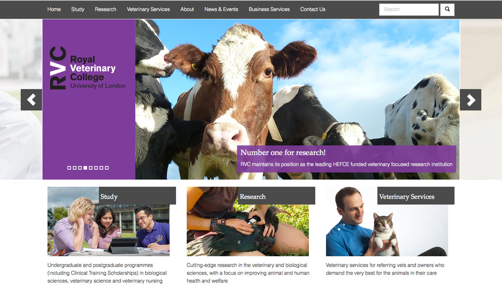
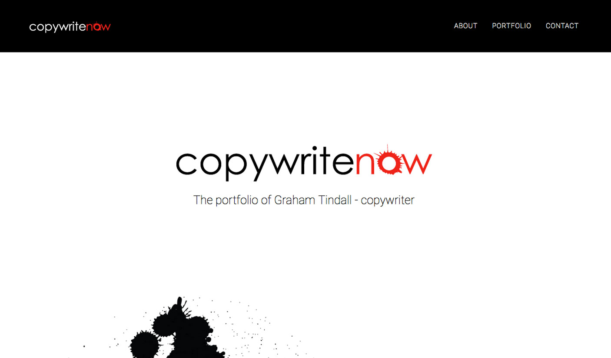
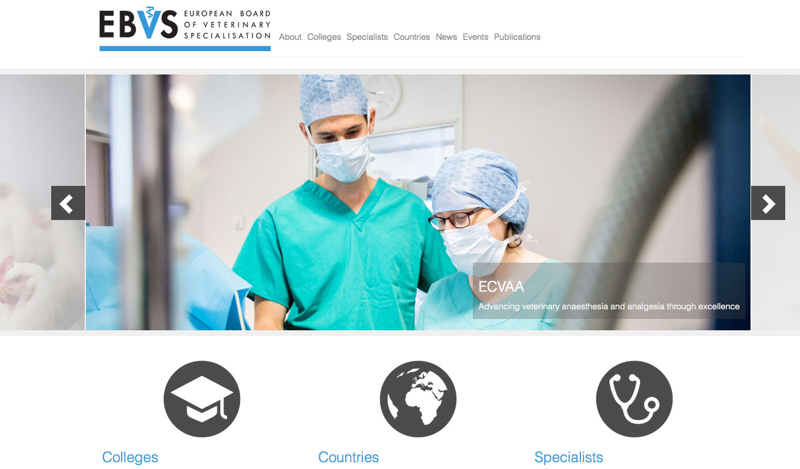
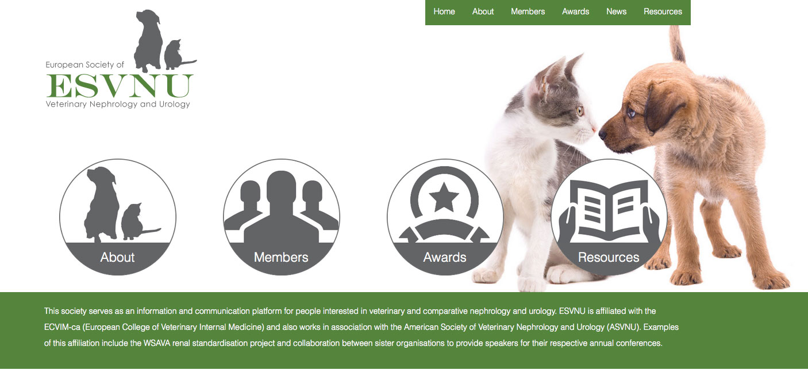

meraki
The soul, creativity, or love put into something; the essence of yourself that is put into your work.
about
meraki.digital is the digital design and development services of Jeff Bullock and Peter Nunn. They have over 9 years experience working together building digital solutions for the Royal Veterinary College, London.
meraki.digital is our portfolio site of the solutions that we carefully crafted with soul, creativity, and love.
portfolio
The Royal Veterinary College
The Royal Veterinary College website is a portal for 7 smaller sites within the organisation. The site was built on the OrchardCMS framework. We were part of a larger team tasked with building the entire college site from the ground up. We designed the user experience, developed the interface and graphic design. Programmed the custom functionality including sliders, editable tabs, panels, permissions, workflows and integration with existing RVC systems, as well as creating an administrative flow to cater for more than 70 content contributors. The site is fully responsive to all modern devices.
Copywritenow
Copywritenow is the portfolio site of Graham Tindall, a leading London based copywriter. This project entailed a complete rebranding, redevelopment of his previous portfolio. The site is now complete and waiting on final content. The site is a single page application. Please note that although the production of the site is complete the final content has yet to be supplied.
European Board of Veterinary Specialisation
The European Board of Veterinary Specialists (EBVS) a bespoke website based on the OrchardCMS framework. EBVS an umbrella organisation for registered EU veterinary specialists, including 25 veterinary specialist colleges, more than 35 distinct specialties and over 3300 specialists. The build of the site required individual specialist access where members are able update their personal details with the functionality to download printable PDF certificates of membership. Colleges are able to automatically create and submit annual returns of college data for EBVS administrative and legal purposes.
European Society of Veterinary Nephrology and Urology
The European Society of Veterinary Nephrology and Urology required a complete corporate branding and the development of a content managed website. Organisational colours were chosen and a logo was developed along with corporate guidelines. The website was built using OrchardCMS and is fully responsive.
contact
We're always keen to talk about new ideas. Please get in touch if you have any digital requirements.